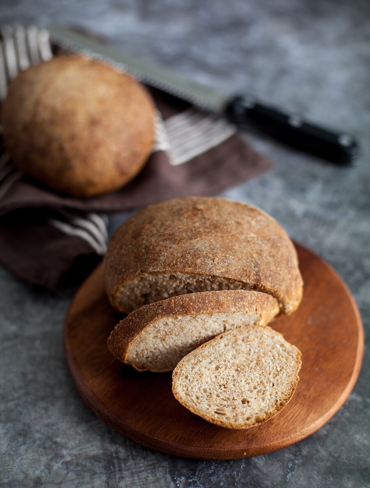

Докторские хлебцы — вкус из детства! Сейчас в российских магазинах не встретишь такого хлеба. Тем ценнее данный рецепт, и это еще одна причина, почему стоит печь хлеб дома.
Я перепробовала множество рецептов — от быстрых версий за два часа до разнообразных вариантов на закваске — и остановилась на этом. Хлеб на опаре — отличный вариант для тех, кто пока еще знакомится с хлебопечением и не готов погрузиться в сложные рецептуры на закваске, при этом вкус хлеба, приготовленного опарным способом, всегда интереснее и богаче. Да и хранится такой хлеб лучше. А еще опарный метод очень удобен для проверки свежести и качества дрожжей.
На этих хлебцах насечки не делаются, поэтому важно дать им максимальную расстойку. Если этого не сделать, на поверхности могут появиться трещины.
для опары:
для теста: